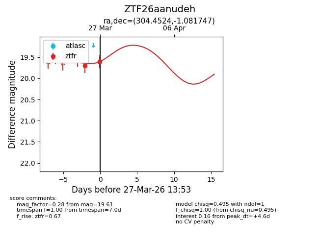
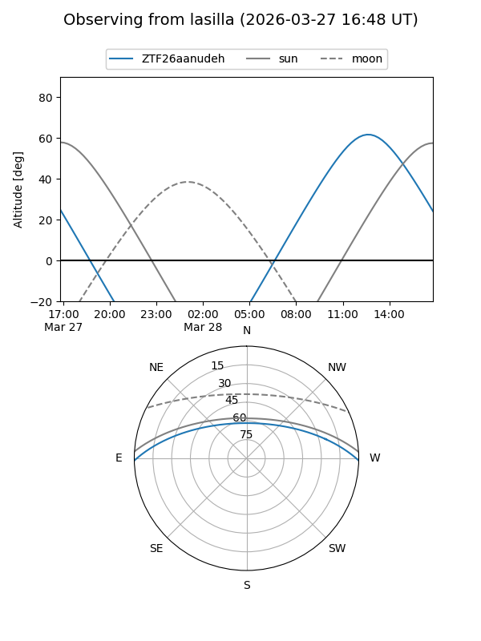
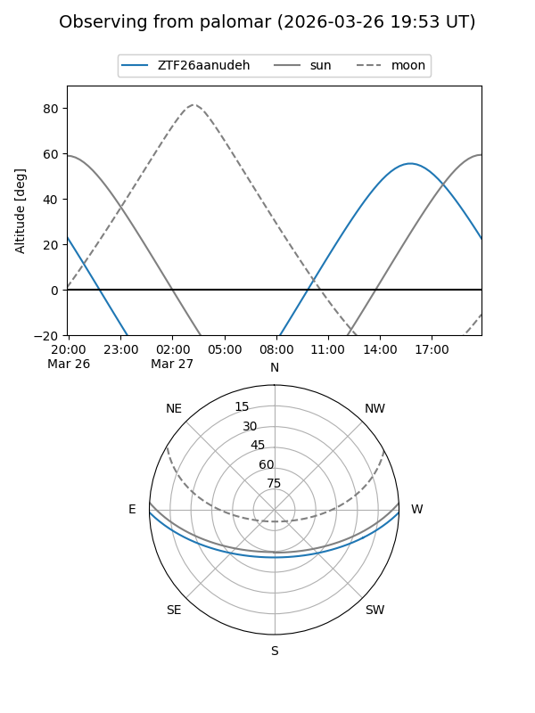
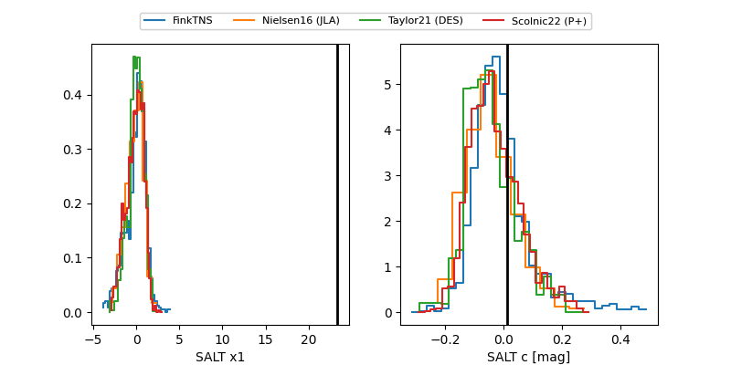

ZTF26aanudeh
Target ZTF26aanudeh at 2026-03-27 13:56
Aliases and brokers:
FINK: link
Lasair: link
ALeRCE: link
alt names
ZTF26aanudeh (ztf,fink_ztf)
Coordinates:
equatorial (ra, dec) = 304.4524,-1.08175
equatorial (HMS+DMS) = 20:17:48.59,-01:04:54.29
galactic (l, b) = (42.1562,-19.63792)
Flags:
Photometry:
last ztfr=19.61
4 ztfr detections
Lightcurve

Visibility


Additional plots
